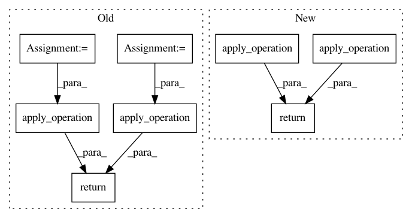

b4d968066572b1092b1bb220eae9635c21e01842,spynnaker/pyNN/models/neuron/synapse_types/synapse_type_exponential.py,SynapseTypeExponential,get_values,#SynapseTypeExponential#Any#Any#Any#,64
Before Change
@overrides(AbstractSynapseType.get_values, additional_arguments={"ts"})
def get_values(self, parameters, state_variables, ts):
decay = lambda x: int(numpy.exp(-ts / x) * ulfract) // noqa E731
init = lambda x: (x / ts) * (1.0 - numpy.exp(-ts / x)) // noqa E731
// Add the rest of the data
return [parameters[TAU_SYN_E].apply_operation(decay),
parameters[TAU_SYN_E].apply_operation(init),
parameters[TAU_SYN_I].apply_operation(decay),
parameters[TAU_SYN_I].apply_operation(init),
state_variables[ISYN_EXC], state_variables[ISYN_INH]]
@overrides(AbstractSynapseType.read_data)
def update_values(self, values, parameters, state_variables):
After Change
def has_variable(self, variable):
return variable in UNITS
@inject_items({"ts": "MachineTimeStep"})
@overrides(AbstractSynapseType.get_values, additional_arguments={"ts"})
def get_values(self, parameters, state_variables, vertex_slice, ts):
decay = lambda x: int(numpy.exp(-ts / x) * ulfract) // noqa E731
init = lambda x: (x / ts) * (1.0 - numpy.exp(-ts / x)) // noqa E731
// Add the rest of the data
return [parameters[TAU_SYN_E].apply_operation(decay),
parameters[TAU_SYN_E].apply_operation(init),
parameters[TAU_SYN_I].apply_operation(decay),
parameters[TAU_SYN_I].apply_operation(init),
state_variables[ISYN_EXC], state_variables[ISYN_INH]]
@overrides(AbstractSynapseType.read_data)
def update_values(self, values, parameters, state_variables):
// Read the data
(_decay_E, _init_E, _decay_I, _init_I, isyn_exc, isyn_inh) = values
state_variables[ISYN_EXC] = isyn_exc
state_variables[ISYN_INH] = isyn_inh
In pattern: SUPERPATTERN
Frequency: 3
Non-data size: 8
Instances
Project Name: SpiNNakerManchester/sPyNNaker
Commit Name: b4d968066572b1092b1bb220eae9635c21e01842
Time: 2018-06-25
Author: Andrew.Rowley@manchester.ac.uk
File Name: spynnaker/pyNN/models/neuron/synapse_types/synapse_type_exponential.py
Class Name: SynapseTypeExponential
Method Name: get_values
Project Name: SpiNNakerManchester/sPyNNaker
Commit Name: 2e55267557d65e523f0688c19a2d3a1ad4699020
Time: 2017-12-01
Author: christian.brenninkmeijer@manchester.ac.uk
File Name: spynnaker/pyNN/models/neuron/synapse_types/synapse_type_exponential.py
Class Name:
Method Name: get_exponential_decay_and_init
Project Name: SpiNNakerManchester/sPyNNaker
Commit Name: 0669a0eedcb0ba1769d54da5c15ce0e68ba04e3d
Time: 2017-11-14
Author: christian.brenninkmeijer@manchester.ac.uk
File Name: spynnaker/pyNN/models/neuron/synapse_types/synapse_type_exponential.py
Class Name:
Method Name: get_exponential_decay_and_init